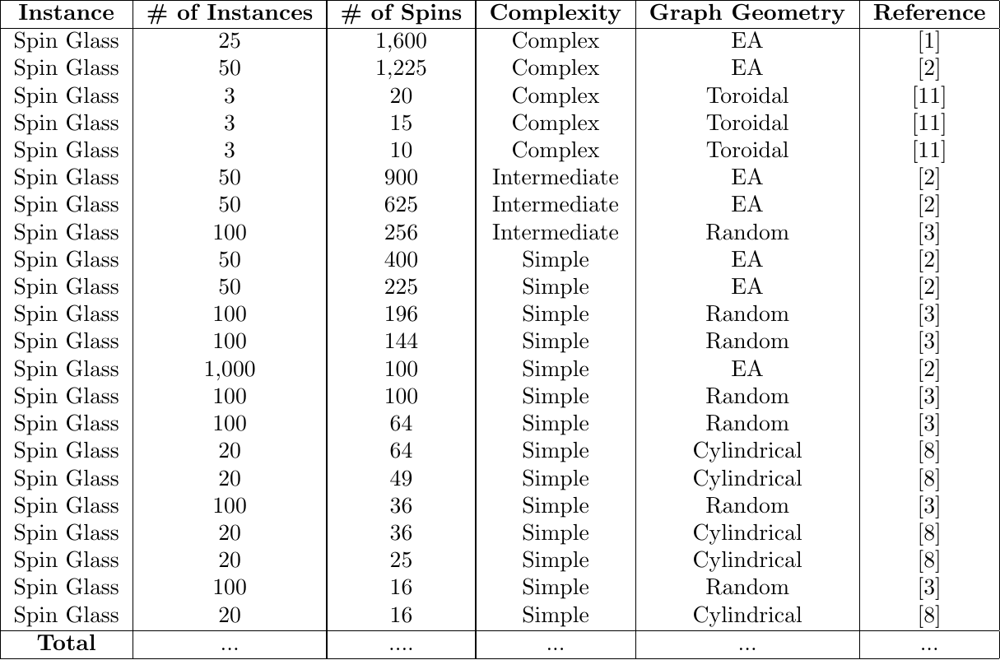

Spin Glass Dataset
Description of Ising Model Type
A spin glass Ising model is characterized by frustrated interactions, meaning some neighboring spins prefer to align while others prefer to oppose. These conflicting orientations prevent the system from reaching a uniformly ordered state. The energy configuration of this model can be given by
Here, \(J_{<i,j>}\) can be either positive or negative. If \(J_{<i,j>}\) is positive, \(s_i\) and \(s_j\) prefer to align and, conversely, they will anti-align. This is the precise phenomenon that defines a spin glass.
Instances
The instances we are providing for the spin glass Ising model type consist of weighted edges. Note that there are both positive and negative edge weights. The complexity of an instance is determined not only by the size, but also the pattern of interactions and frustration.
1D

2D
3D

4D

Mean-Field

Dataset References
Below contain the references to the datasets we gathered on this website.
[1] Variational Neural Annealing
Citation: Hibat-Allah, M., Inack, E. M., Wiersema, R., Melko, R. G., & Carrasquilla, J. (2021). Variational neural annealing. Nature Machine Intelligence, 3(11), 952–961. https://doi.org/10.1038/s42256-021-00401-3
VNA proposes a parameterized annealing model to stochastically search for ground states of the Ising model. It features fully connected spin glass instances, as well as Edwards-Anderson (EA) and Wishart Planted Ensemble (WPE) graph instances of the Ising model.
[2] Searching for Spin Glass Ground States Through Deep Reinforcement Learning
Citation: Fan, C., Shen, M., Nussinov, Z. et al. Searching for spin glass ground states through deep reinforcement learning. Nat Commun 14, 725 (2023).
This paper introduces DIRAC, a deep reinforcement learning framework that can be trained on small-scale spin glass instances and applied to arbitrarily large ones. DIRAC has found success in scalability compared to other methods and has been tested on 2D, 3D, and 4D EA spin-glass instances.
[3] Finding the Ground State of Spin Hamiltonians with Reinforcement Learning
Citation: Mills, K., Ronagh, P. & Tamblyn, I. Finding the ground state of spin Hamiltonians with reinforcement learning. Nat Mach Intell 2, 509–517 (2020).
This paper demonstrates that an RL agent is able to surpass the performance of standard heuristic temperature schedule for two classes of Hamiltonians. They show the performance of their implementation by training on weak-strong clusters (bipartite graph with two fully connected clusters) and nearest-neighbor square spin glasses.
[4] Quantum-enhanced Markov Chain Monte Carlo
Citation: Layden, D., Mazzola, G., Mishmash, R.V. et al. Quantum-enhanced Markov chain Monte Carlo. Nature 619, 282–287 (2023). https://doi.org/10.1038/s41586-023-06095-4
This paper provides an algorithm that leverages MCMC to sample from the Boltzmann distribution of classical Ising models. It performs testing analysis on spin-glass Ising models ranging from 3 to 10 spins, and each set of spins featuring both a fully connected and line connected configuration.
[5] Wavelength-Division Multiplexing Optical Ising Simulator
Citation: Li Luo et al., Wavelength-division multiplexing optical Ising simulator enabling fully programmable spin couplings and external magnetic fields. Sci. Adv. 9, eadg6238 (2023). DOI: 10.1126/sciadv.adg6238
This paper uses a spatial photonic Ising machine to compute Ising Hamiltonians of programmable Ising models. To demonstrate the programming capabilities, testing is performed on $pm$ J models, Sherrington-Kirkpatrick (SK) models, and locally connected $J_1-J_2$ models
[8] Beyond-classical computation in quantum simulation
Citation: Andrew D. King et al., Beyond-classical computation in quantum simulation. Science 388, 199-204 (2025). DOI:10.1126/science.ado6285
This paper uses seeks to establish quantum computing’s capability of handling complex computational problems, within the field of quantum simulation. With the problem scope focusing on the Ising model, they compare their QPU’s results against classical algorithms (Schrodinger equation dependent) on various spin-glass models. Specifically, testing was performed on 2D cylindrical spin-glass, 3D cubic spin-glass, 3D diamond spin-glass, and bi-clique spin-glass instances.
[9] Quantum-enhanced greedy combinatorial optimization solver
Citation: Maxime Dupont et al., Quantum-enhanced greedy combinatorial optimization solver. Sci. Adv. 9, eadi0487 (2023). DOI:10.1126/sciadv.adi0487
This paper introduces a quantum heuristic optimization algorithm for combinatorial optimization problems. Attempting to overcome noise constraints by reducing the problem to a classical greedy problem. Specifically, this heuristic algorithm is tested on Sherrington-Kirkpatrick spin-glass problems.
[11] Biq Mac Library
Citation: https://biqmac.aau.at/biqmaclib.html
A dataset for QUBO and Max-Cut instances curated for the development of a QUBO and Max-Cut solver (Biq Mac). Within this dataset contains Ising model instances, specifically, Toroidal grid graphs and Ising chain instances.
[12] On Computational Complexity of 3D Ising Spin Glass: Lessons from D-Wave Annealer
Citation: https://doi.org/10.48550/arXiv.2501.01107
This paper searches for the ground state of 3D spin-glass instances using annealing methods on the D-Wave quantum annealer. To demostrate the NP-hard complexity of 3D spin-glass instances, they performed testing on 3D instances ranging from 3558 to 5627 spins.
[14] Solving Statistical Mechanics Using Variational Autoregressive Networks
Citation: Wu, Dian & Wang, Lei & Zhang, Pan. (2019). Solving Statistical Mechanics Using Variational Autoregressive Networks. Physical Review Letters. 122. 10.1103/PhysRevLett.122.080602.